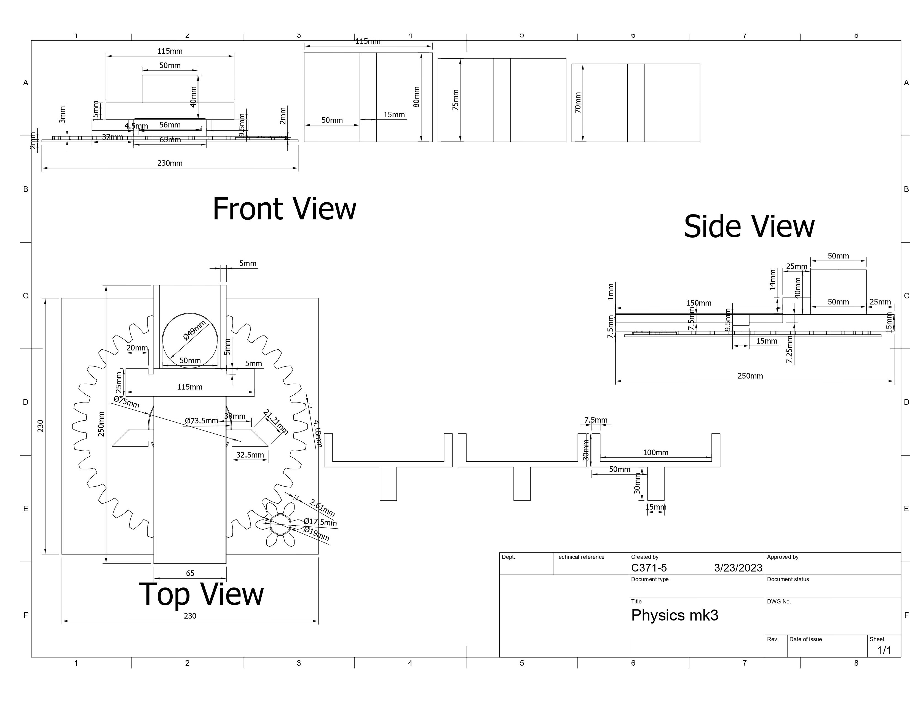
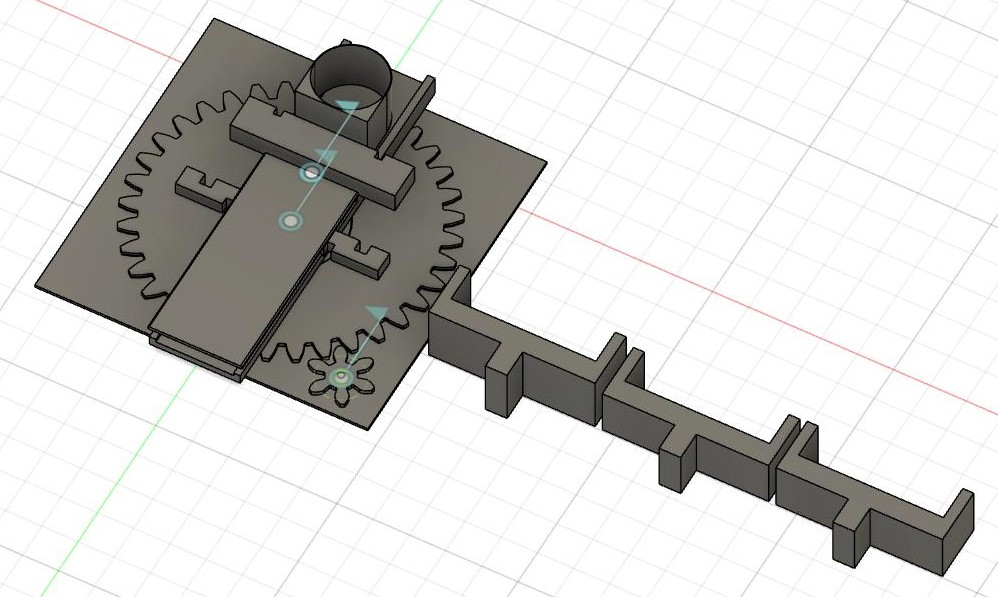
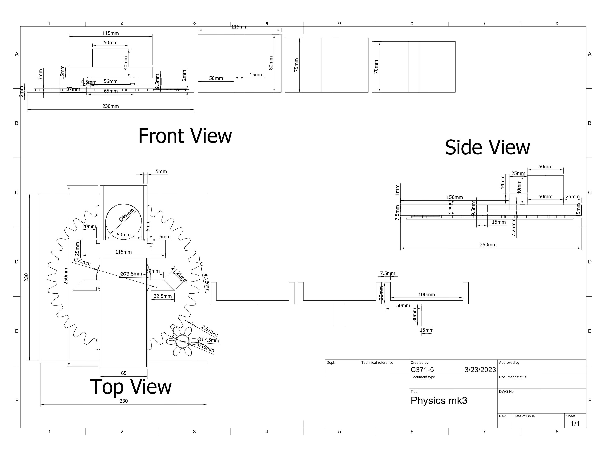
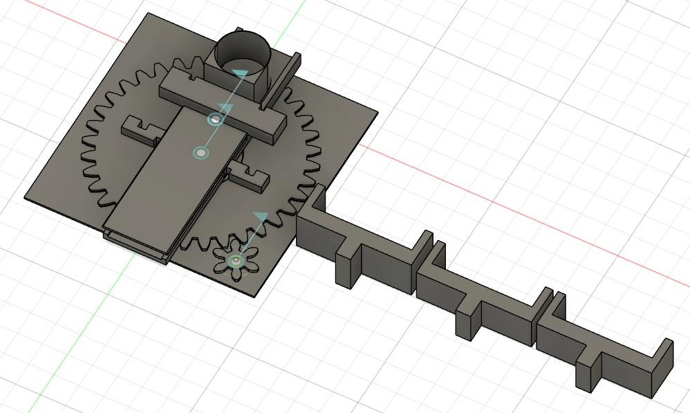

Disc Shooter
 



Fully designed, 3D printed, and asssembled by myself this 3D printed disc shooter was created for a project in the Tickle College of Engineering at the University Of Tennessee Knoxville.
The goal of this project was to produce a device of less than 50 grams and 25x25x40cm in volume which could fire a poker chip to multiple randomly chosen regions on a table top.
A corresponding MatLab code was to be included that would provide the user the neccesary information for each shot given solely the input of which regions needed to be scored.
In addition, the device could not be moved between shots, beyond using any built in aiming mechanism, but could be triggered by human interaction.
The solution I chose for this challenge
was a sort of slingshot-crossbow combination. I chose to 3D print my device both due to my experience with the technology and because I knew it would allow the device to easily fall below the weight limit without sacrificing functionality.
Featuring a free sliding firing block driven along a track by two rubber bands, the firing block would be held back at certain draw distances by
3D printed arches. To fire the arches would be quickly removed allowing for the firing block to be drawn forward by the rubber bands. The arches were each of different lengths
so as to change the amount of elastic potential energy input, and thus kinetic energy output.
In order to approximate the elastic potential energy, it was required to experiementally determine the spring constant of my chosen rubber bands. This was acheived using MATLAB's polynomial fitting and evaluator functions.
Once elastic potential energy was determined it could be converted by the same MATLAB code into a value for kinetic energy and after accounting for friction and other factors, the final position of the disc. From there measurements were
taken of the game board and a corresponding set of coordinates assigned to each possible score zone. A combination of user input and conditonal statements were used in order to allow for an input of scoring zone locations and output of drawback distance.
The neccesary angle to reach zones not directly in front of the shooter were calculated via trigonometric functions. These angles were converted to gear rotations by the MATLAB program and the larger base gear adjusted by the smaller turner gear.